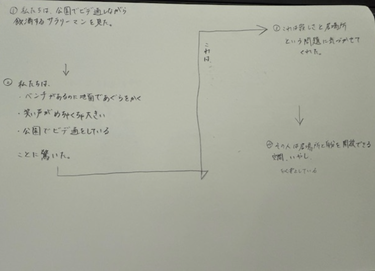
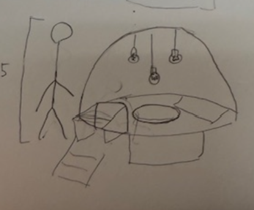
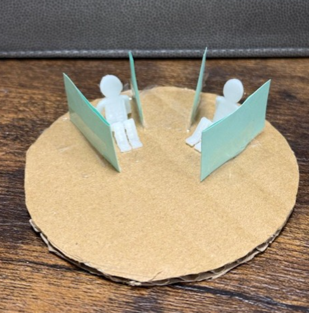
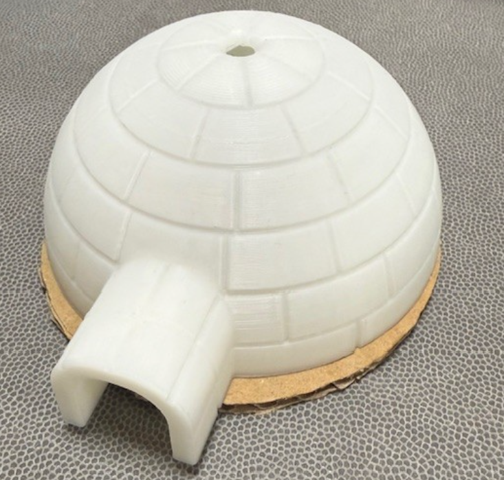

対象
私たちの班では”夜中に公園でお酒を片手にビデオ通話をして大声で笑っている会社員”
にしてあげられることを考えることにした。
作品
POV
HMV

班内での話し合いの結果、この会社員は公園であぐらをかき、すみっこでビデオ通話をしていることから、
子供の頃に戻ること（自分を解放できる場所）、癒しを求めているのではないかと考えた。
私はこの結果をもとにリラックスかつ、子供の頃を思い出せる空間を作ることにした。
子供の頃に戻ること（自分を解放できる場所）、癒しを求めているのではないかと考えた。
私はこの結果をもとにリラックスかつ、子供の頃を思い出せる空間を作ることにした。
自分の中で子供の頃にワクワクすることを考えた結果、私が子供の頃によく作ったかまくらを公園の遊具として
リラックスできる空間にしようと思った。

リラックスできる空間にしようと思った。
下の画像が完成したものです。


内装は仕切り以外にものを置かないことで各々がしたいことに向き合うことができると考えた。
癒し空間という面でもかまくらの中はドーム状なのである程度の声量も抑えられる。
癒し空間という面でもかまくらの中はドーム状なのである程度の声量も抑えられる。
使用機材
3Dプリンター